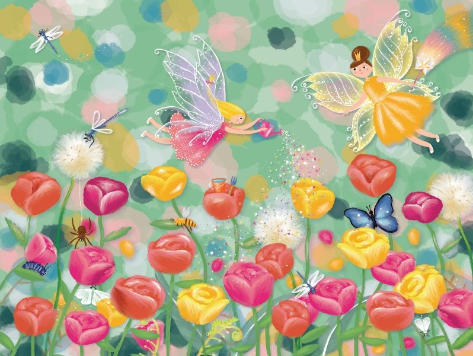
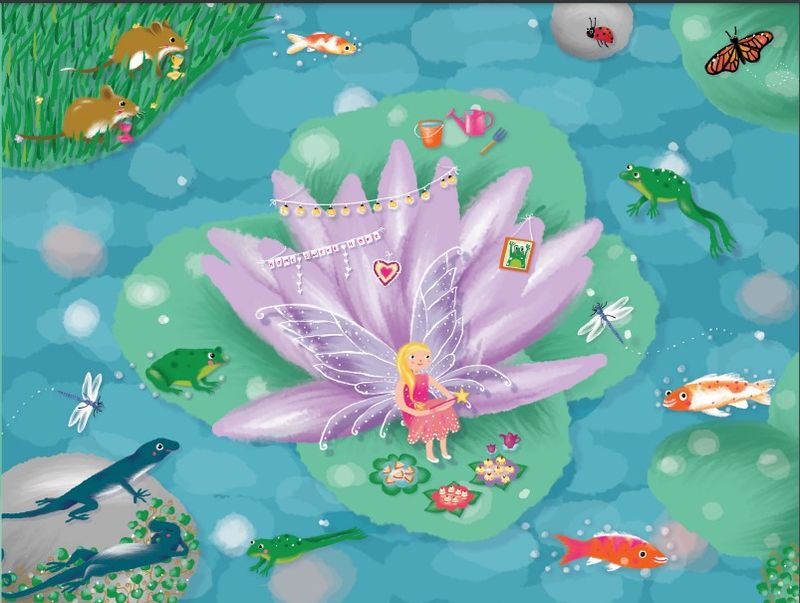
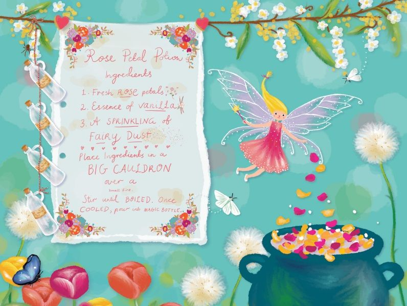
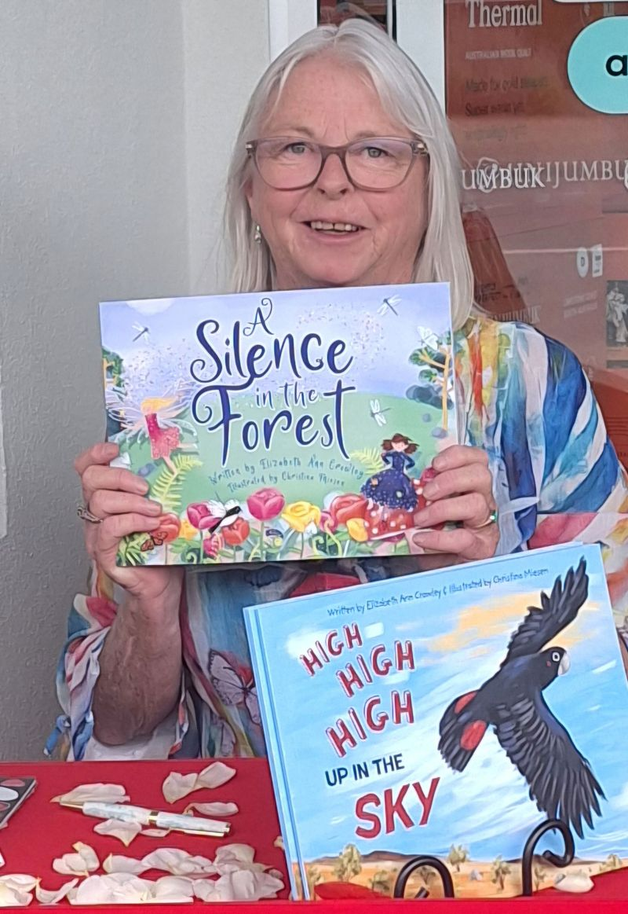

Lily, Sally and the Rosebush Forest
Lily the Fairy spends her days tending to the needs of the peaceful forest folk. She loves her role of protecting the beautiful Rosebush Forest.
Then Sally the sprite turns up. She's an old fairy school rival who never finished fairy school, and she's jealous. Lily and her friends have to act quickly to bring peace back to the forest. Can Sally's naughty spell be broken, or will the forest be forever changed?
It's set in the Australian bush, with native animals in the main roles, and it's about friendship, jealousy, forgiveness and kindness.
- Picture book for ages 3 to 8
- 58 pages, paperback
- Illustrated by Christina Miesen
Signed copies come with a personal dedication and a matching bookmark. Write the child's name when you order.
Inside the book


“It now has to be read every night.”Liz, review on Amazon
“Beautiful and fantastical!”Alison, Indie Book reviewer

About Elizabeth
Elizabeth lives on the Limestone Coast in regional South Australia. She and her husband Rob run a small boutique caper farm with their dog Boy, and she spends her days tilling the soil, planting seeds and growing vegetables.
“I just want to bring some joy and magic into children’s lives through my stories.”
A Silence in the Forest is her first children's book.
Also by Elizabeth
High High High Up in the Sky is about Billy the red-tailed black cockatoo and his best friend Oz the wedge-tailed eagle. When Billy strays far from home, Oz has to find him. Christina Miesen illustrated this one too.
For school visits, events and trade orders, message Elizabeth on Instagram.